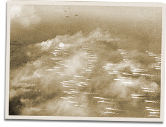

|
j
a v a s c r i p t |
Pg.3/3
October 19, 1944
NEWS: New record for U.S. subs — 32 ships. Forrestal: 905 Japanese ships sunk and crippled in 4-1/2 months, more than 3,000 planes destroyed. Add 204 sunk by subs in the same period and the total is 1,109 ships!
Shot down
Tribune: "Enemy loses 18 planes in city raid" — "repulsed," of course. Three waves over Manila, five waves over Clark, the same over Aparri, and more over Cebu and Tacloban. A picture shows a plane going down in flames. Still more on the Formosa campaign: "Army, Navy Commander is Congratulated" — Laurel. "Nimitz strategy receives setback ... sees long conflict in Pacific ... unequalled in history of naval warfare ... might choose to postpone his final offensive." And now the reason for this massive propaganda blitz... . . . . .

Landing Craft Head to Leyte
FLASH: Daihon-ei communiqué of 1730 today revealed that an American Naval Force entered LEYTE BAY on October 17 and has been bombing and shelling the coastal area since the afternoon of October 18! |
|
|
|
|